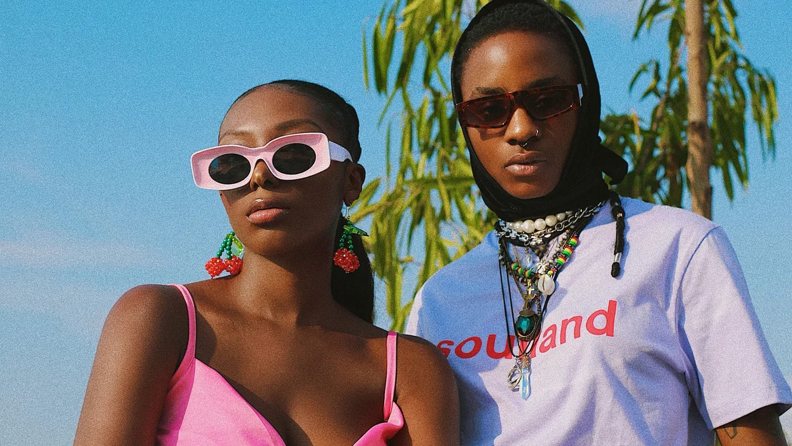

Alté Music
Introduction
Alté is a subgenre of the Afro family class of music that combines parts of several music styles, including both Afro and western influences, to create a distinctive sound, that despite sounding Afro, is distinct and different from popular Afro music. It has a very unique sound that incoporates elements of afrobeat, hiphop, alternative r&b, and other musical genres. Each record on the Alté landscape has a distinct sound that sets it apart from the others and from popular afrobeats.
Origins
The term Alté (pronouced as "uh-teh") was coined in the 2010s by the Nigerian music group DRB_LasGidi and since then, the movement has gotten traction in Nigeria, Ghana, the Uk and other African nations. Much of the time, the Alté scene is underground, but a handful of works have been commerically successful, thus elevating the notoriety of the Alté movement. If Orange Was a Place by Tems, rare. by Odunsi (The Engine) and The Palmwine Express by Show Dem Camp are a few famous examples of popular Alté works.